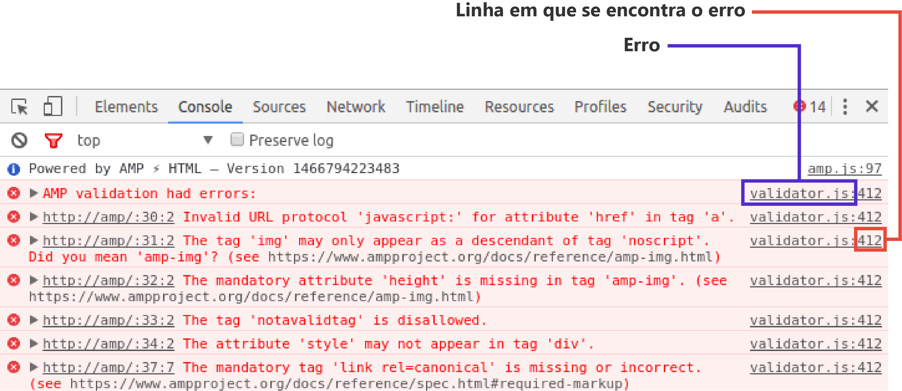
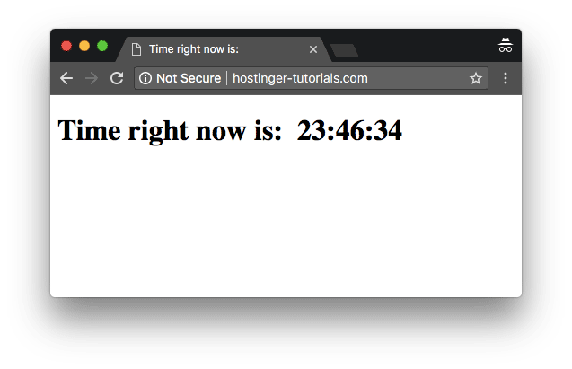

Neste tutorial, vamos mostrar para você como adicionar JavaScript no HTML. O começo deste guia vai ter uma curta introdução ao JavaScript, enquanto o restante do conteúdo vai focar em várias maneiras que ensinam você a como inserir JavaScript no HTML.
Se você quer exibir no seu site um conteúdo estático como, por exemplo, um conjunto de imagens, então o HTML pode servir muito bem para você. Entretanto, páginas estáticas estão cada vez mais se tornando coisa do passado.
A maior parte dos conteúdos de hoje é interativo e possui slideshows chamativos, formulários e menus. Eles melhoram a experiência do usuário e adicionam dinamicidade para um site.
E isso tudo é conseguido através do uso de linguagens de programação, sendo a JavaScript uma das mais famosas nesse sentido. Ela permite que os desenvolvedores criem sites que interajam com os usuários e vice-versa.
Embora existam muitas outras linguagens disponíveis, nenhuma delas é tão popular quanto a JavaScript. E para tirar o seu máximo de proveito, ela é geralmente usada em conjunto com o HTML.
A linguagem JavaScript era, antes de tudo, conhecida como LiveScript. Por conta do termo Java ser muito popular no mundo inteiro, a Netscape decidiu renomeá-la para JavaScript. A sua origem data de 1995, durante a fase 2.0 da Netscape. Abaixo estão algumas das vantagens de usar a linguagem JavaScript:
Interação mínima com o servidor
É um fato que se você quer otimizar o desempenho de um site, a melhor maneira de fazer isso é reduzindo a comunicação com o servidor. A JavaScript ajuda nesse sentido validando os comandos do usuário pelo cliente. Ele apenas envia pedidos para o servidor depois de rodar as verificações iniciais de validação. Como resultado, o uso de recursos e a quantidade de pedidos para o servidor diminuem significantemente.
Interface rica e amigável
Usando a linguagem JavaScrpit, você pode criar interfaces interativas pela perspectiva do cliente. Por exemplo: carrosséis nos topos de páginas, slideshows, efeitos que são acionados quando o ponteiro do mouse passa por cima e funções que podem ser arrastadas e movidas de um lugar para outro.
Resposta imediata ao usuário
Usando a linguagem JavaScript, você assegura respostas imediatas para os usuários. Por exemplo, vamos imaginar uma situação em que um usuário preencheu um formulário e deixou um campo vazio. Sem a validação JavaScript, ele precisa esperar até que a página seja recarregada para só então perceber que deixaram um campo vazio. Entretanto, com a JavaScript, ele é alertado sobre isso instantaneamente.

Fácil depuração
A JavaScript é uma linguagem de interpretação, o que significa que os códigos escritos são decifrados linha a linha. Em caso de surgimento de possíveis erros, você verá o número exato da linha em que o problema se encontra.
Como adicionar JavaScript no HTML
Existem duas maneiras de adicionar JavaScript no HTML e fazê-las trabalhar juntas. Agora que já falamos sobre a linguagem JavaScript e vimos algumas das vantagens que ela oferece, vamos dar uma olhada em algumas das maneiras que podemos inserir JavaScript no HTML.
Como adicionar JavaScript diretamente em um arquivo HTML
O primeiro jeito de adicionar JavaScript no HTML é mais direto. Você pode fazer isso usando a tag < script>< /script>, que deve abranger todo código JS que você escrever. O código JS pode ser adicionado:
Dependendo de onde você adicionar o código JavaScript no arquivo HTML, o carregamento é diferente. A prática recomendada é inseri-lo na seção < head>, pois ele ficará separado do conteúdo real do arquivo HTML.
Mas saiba que, colocá-lo na seção < body> poderá melhorar a velocidade de carregamento, já que o conteúdo do site atual será carregado mais rapidamente, e somente então o JavaScript será analisado. Para este exemplo, vamos dar uma olhada no arquivo HTML abaixo, usado para mostrar o horário atual.
< !DOCTYPE html>
< html lang="en-US">
< head>
< meta charset="UTF-8">
< meta name="viewport" content="width=device-width, initial-scale=1">
< script>JAVASCRIPT IS USUALLY PLACED HERE< /script>
< title>Time right now is: < /title>
< /head>
< body>
< script>JAVASCRIPT CAN ALSO GO HERE< /script>
< /body>
< /html>
Neste formato, o código acima não tem JavaScript e, consequentemente, não pode mostrar a hora atual. Podemos adicionar o código abaixo para ter certeza de que a página irá mostrar a hora esperada correta.
var time = new Date();
console.log(time.getHours() + ":" + time.getMinutes() + ":" + time.getSeconds());
Vamos colocar este código entre as tags < script> e < /script> e colocá-lo no topo do código HTML para garantir que, quando a página carregar, um alerta é gerado e mostre a hora atual para o usuário. Abaixo você vê como o arquivo HTML deve ficar depois de inserir o código JavaScript nele:
< !DOCTYPE html>
< html lang="en-US">
< head>
< meta charset="UTF-8">
< meta name="viewport" content="width=device-width, initial-scale=1">
< title>Time right now is: < /title>
< script>
v ar time = new Date();
c onsole.log(time.getHours() + ":" + time.getMinutes() + ":" + time.getSeconds());
< /script>
< /head>
< body>
< /body>
< /html>
Se você quiser mostrar a hora dentro do corpo da página, você precisa incluir o script dentro das tags do HTML da página. Abaixo você confere como o código deve ficar quando você fizer isso:
< !DOCTYPE html>
< html lang="en-US">
< head>
< meta charset="UTF-8">
< meta name="viewport" content="width=device-width, initial-scale=1">
< title>Time right now is: < /title>
< /head>
< body>
< script>
let d = new Date();
document.body.innerHTML = "< h1>Time right now is: " + d.getHours() + ":" + d.getMinutes() + ":" + d.getSeconds()
"< /h1>"
< /script>
< /body>
< /html>
E abaixo está o resultado final do que você deve ver na página:

Como adicionar JavaScript em um arquivo separado
Às vezes, inserir JavaScript no HTML de forma direta pode não parecer o melhor jeito de ligar uma linguagem à outra. Isso porque porque alguns scripts JS precisam ser usados em múltiplas páginas e, por isso, é melhor manter o código JavaScript em arquivos separados.
Por isso que um jeito mais aceitável de inserir JavaScript no HTML é pela importação externa de um arquivo. Esses arquivos podem ser referenciados de dentro de documentos HTML, assim como referenciamos documentos CSS.
Alguns dos benefícios de adicionar um código JS em arquivos separados são:
Podemos referenciar um arquivo JavaScript dentro do HTML dessa forma abaixo:
< !DOCTYPE html>
< html lang="en-US">
< head>
< meta charset="UTF-8">
< meta name="viewport" content="width=device-width, initial-scale=1">
< title>Time right now:< /title>
< /head>
< body>
< /body>
< script src="js/myscript.js">< /script>
< /html>
Os conteúdos do arquivo myscript.js serão:
et d = new Date();
document.body.innerHTML = "< h1>Time right now is: " + d.getHours() + ":" + d.getMinutes() + ":" + d.getSeconds()< /h1>"